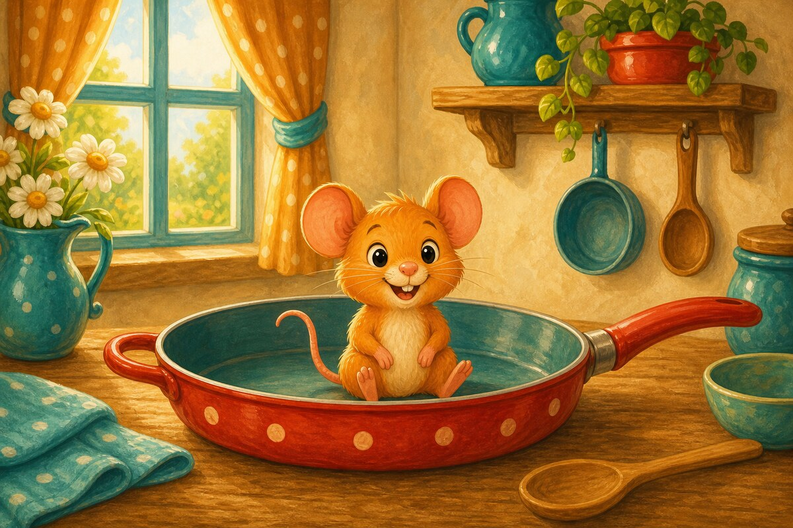
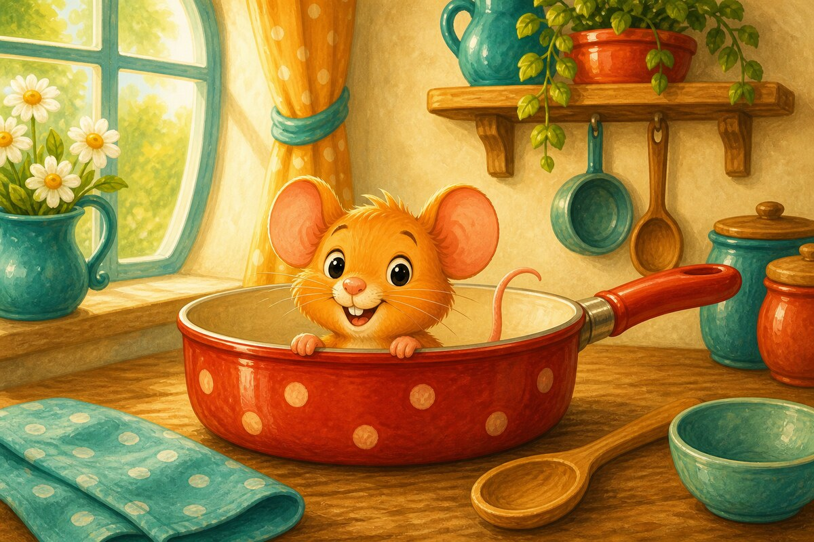
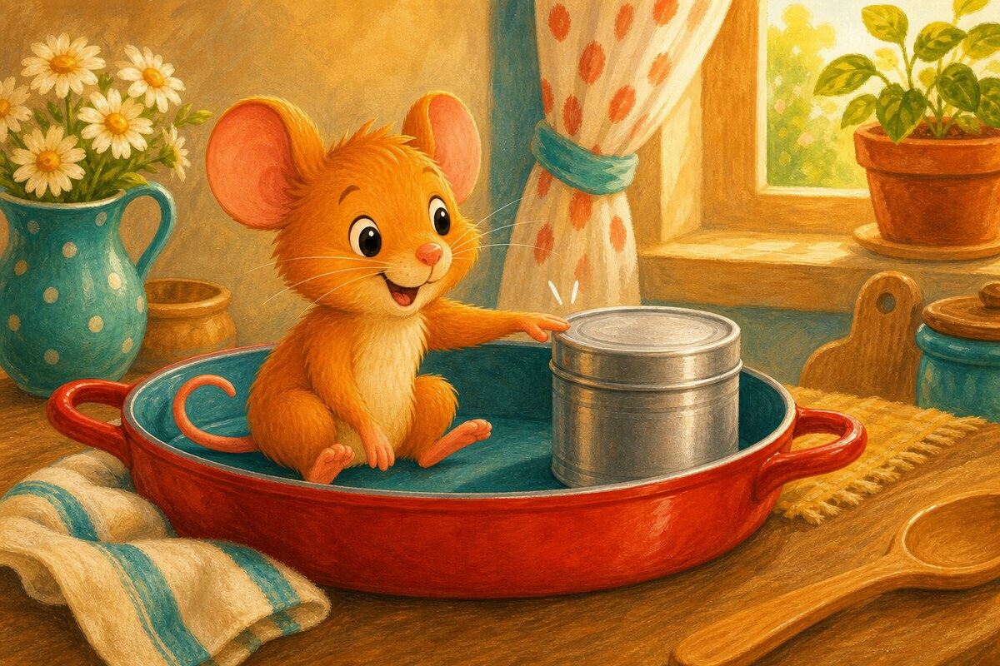
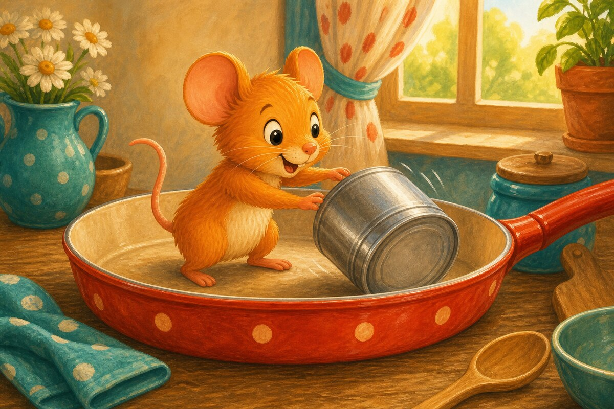
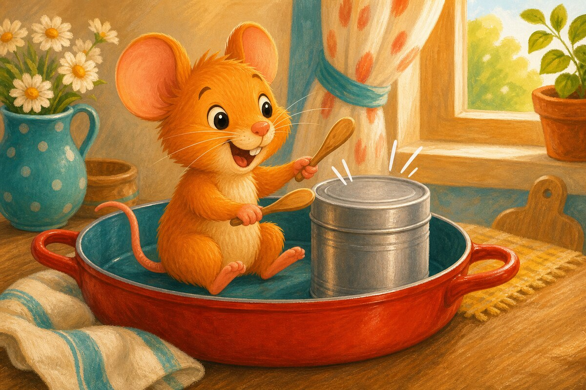
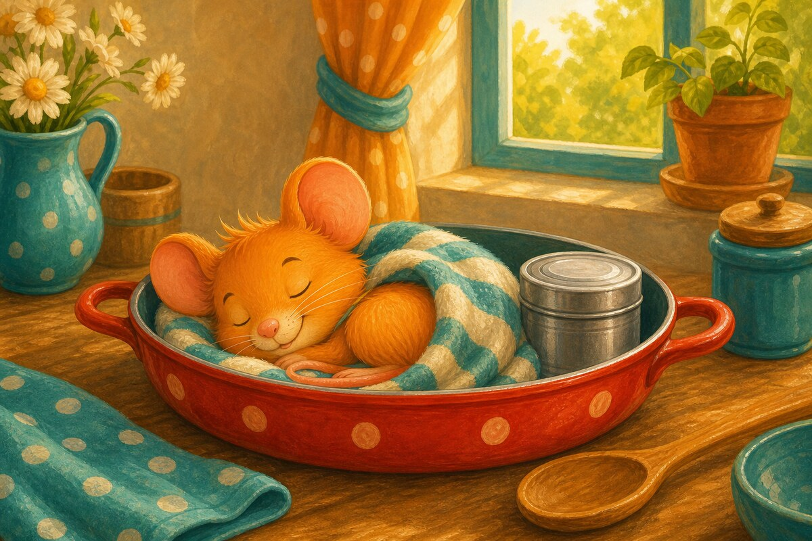

Page 1 of 6
Pip sits.
A 6-page Stage 1 sound practice story. Prepare the declared exceptions together before your reader tries the words.
8 printed pages · 1.8 MB · A4 or US Letter. Download PDF · Open PDF to printOpens in a new tab. Use the PDF viewer's Print control. To use less ink, read online and choose only the questions on page 8 in Print.


Pip sits.

Pip is in a pan.

Pip taps a tin.

Pip tips the tin.

Tap, tap, tap!

Pip naps.
The tin. Can you sound out t-i-n?
Review the preparation note and word lists above.
SnackPack ABC & Alphabet continues with letter activities, read-together stories and more early phonics practice.
More practice at this stageNan and Pip
Explore another book · read togetherBaby Bulldogs at the Playground
Know a family or class who would enjoy it?